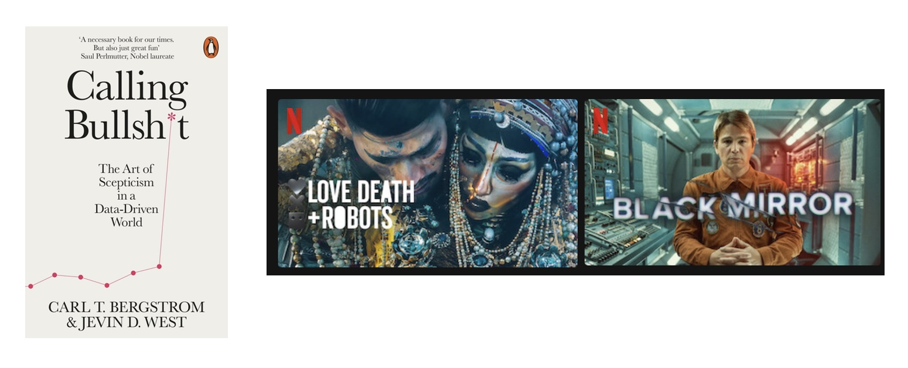
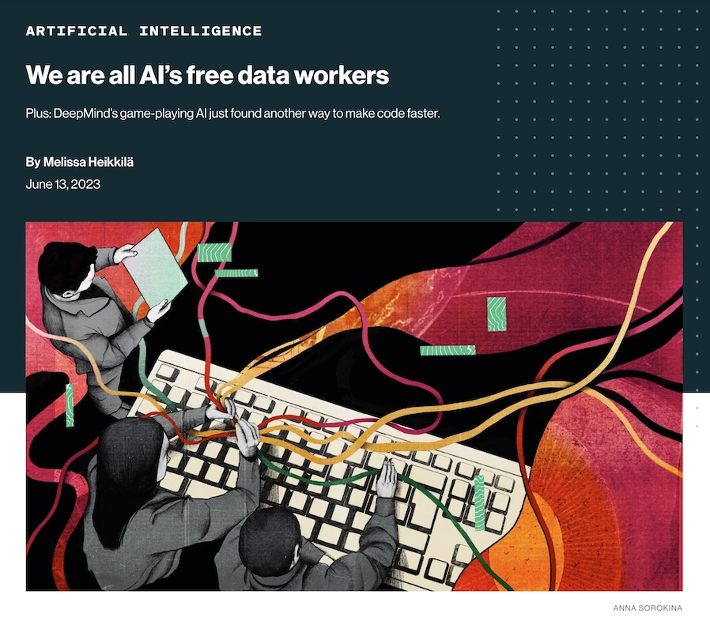
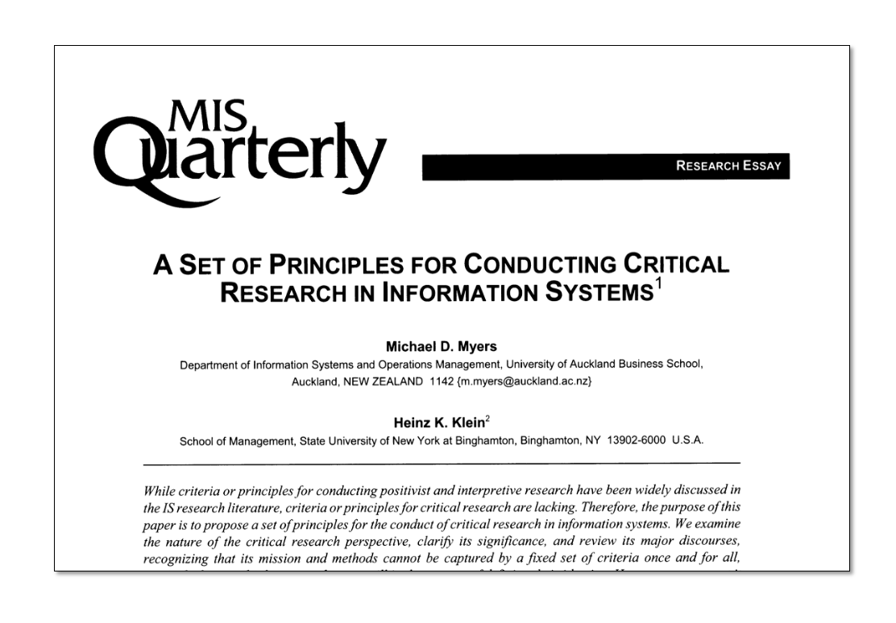
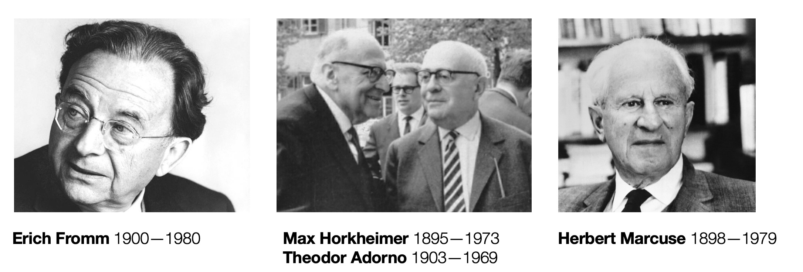
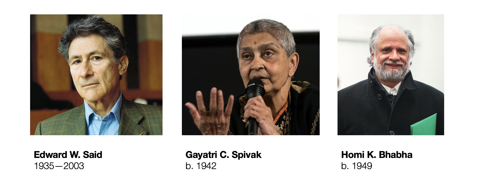
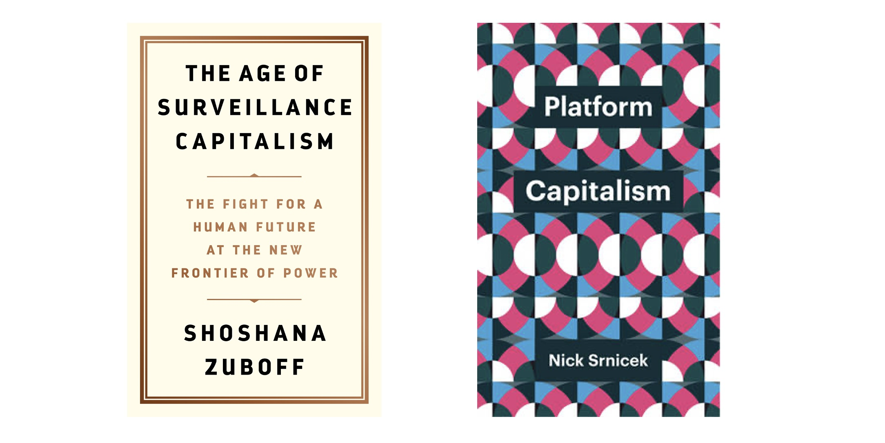
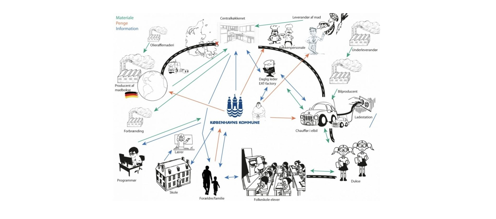
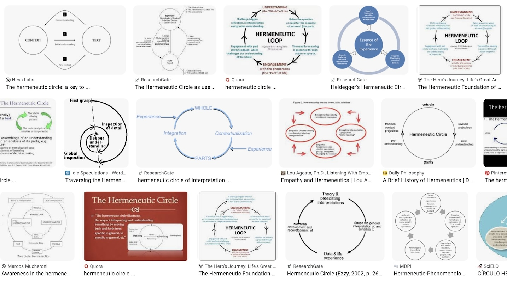
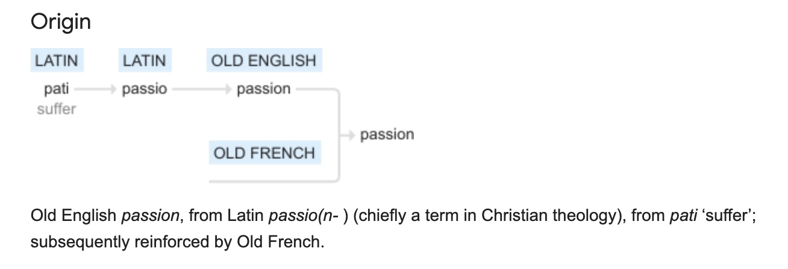

Critical IS Research Seminar
Critical IS Research Seminar (Galway, 15 November 2023)
To Reveal and Provoke: An Open Invitation to Critical Information Systems Research
Blair Wang
University of Galway, Ireland
blair.wang@universityofgalway.ie
Disciple of Business Information Systems Seminar Series
15 November 2023
—
View online at www.blair.wang/cisr.
Generated using Quarto.
Disclaimers
- I know a little about all the parts, but I do not know everything about any of the parts.
- This is just a broad overview of the landscape. 🏔️🏝️ — Inevitably (over)simplifying.
- I do not have all the references — if you’re interested, let’s explore together! 🕵️
- Some parts I want to highlight, with a star ⭐️ — this does not mean they’re “better”, just very interesting examples.
- This is loosely based off a 2019 conference paper: B. Wang, Schlagwein, Cecez-Kecmanovic, & Cahalane (2019)
1. What is critical IS research?
What is research in general?
- “How the world works”? (classic “science” as in Wissenschaft / Naturwissenschaft)
- “How to make something new”? (R&D — research & development)
- “How people think/behave”? (social sciences)
A critical perspective in IS?
Critical IS studies aim at revealing, criticizing and explaining how the development and use of IS in organizations and society in the pursuit of efficiency, rationalization and progress also increase social control and domination, with potential detrimental consequences for some stakeholders and society as a whole. Being ‘critical’ in IS research also means subscribing to a much broader historical, social and political view of the IS discipline and the role of IS across all institutional levels of society. Critical research draws attention to the ways in which economic and managerial interests, ideologies and discourses, assisted by educational and research funding institutions, shape and construct IS research.
(Cecez-Kecmanovic, Klein, & Brooke, 2008, p. 123, emphasis added)
- Revealing → ‘explaining’, ‘criticizing’
- Provoking → ‘draws attention’
- “To reveal is to critique” (Doolin & Lowe, 2002)
- More about understanding (the extent of) the problem rather than already trying to develop the solution. In fact there’s a concept in critical IS research called digital solutionism which critiques premature or naive solutions (Rowe, Ngwenyama, & Richet, 2020).
- We are implicitly rejecting technological determinism in favour of something more like social constructivism or even free will (Kreps & Rowe, 2021).
Two mental images: “Calling BS”, “Black Mirror”

“Calling BS” (Bergstrom & West, 2020; Christensen, Kärreman, & Rasche, 2019), e.g., “calling BS on ChatGPT” (Sundar & Liao, 2023).
Two Netflix shows — Black Mirror (2011—2023), Love Death + Robots ❤️❌🤖 (2019—2022)
Example: Discussion around the human labour behind AI

Example: Schulzke (2014) on virtual worlds
While artificial worlds have enormous potential to facilitate communication, transcend spatial boundaries, promote free expression, and protect marginalized groups, the utopian promise of these worlds is undermined by their mirroring of real-world market systems, the exploitation of labor, and blurring the line between entertainment and work.
In case you might think that “this paper is from 2012 and it’s not relevant anymore”, here are some YouTubers calling out alleged de facto child labour on a popular childrens’ online video game:
- “Investigation: How Roblox Is Exploiting Young Game Developers” by More People Make Games (2,282,376 views, 19 Aug 2021) — https://www.youtube.com/watch?v=_gXlauRB1EQ
- “Roblox Pressured Us to Delete Our Video. So We Dug Deeper.” by More People Make Games (7,222,609 views, 13 Dec 2021) — https://www.youtube.com/watch?v=vTMF6xEiAaY
- “Roblox Is Exploiting Kids. We Talked To Some Of Them.” by More Perfect Union (168,980 views, 7 Sept 2023) — https://www.youtube.com/watch?v=n6PYj93SGxc
Myers and Klein (2011)

Definitions taken from Michael D. Myers & Klein (2011), p. 24; adapted from Alvesson & Deetz (2000).
Insight: “This element is concerned with interpretation and gaining insight. Insight can be gained in various ways, e.g., using critical hermeneutics and the archaeology of knowledge, or the concepts of social reproduction via the mechanisms associated with symbolic capital.”
Critique: “This element is concerned with critique, the genealogy of knowledge, and the social practices of control and reproduction. This element goes beyond interpretation to focus the researcher on the power structures that lie behind accepted interpretations.”
Transformation: “This element is concerned with suggesting improvements to the conditions of human existence, existing social arrangements, and social theories. Theories are not the primary driver for changes, but potentially fallible lenses through which we see the world. The ultimate arbiters of the desirability of changes are those affected by them.”
Similar and not-so-similar areas of research
Very similar ✅
- Critical Theory (Bronner, 2011)
- Critical Management Studies (Alvesson & Willmott, 1992), to which IS researchers contributed (Lyytinen, 1992)
- Science and Technology Studies (Hackett, Amsterdamska, Lynch, & Wajcman, 2008)
- Orlikowski & Baroudi (1991)
- Ngwenyama (1991)
- Alvesson & Willmott (1992)
- Lyytinen (1992)
- Hirschheim, Klein, & Lyytinen (1996)
- Michael D. Myers & Young (1997)
- Alvesson & Deetz (2000)
- Brooke (2002), Cecez-Kecmanovic, Janson, & Brown (2002) (special issue in JIT)
- McGrath (2005)
- Richardson & Robinson (2007)
- Cecez-Kecmanovic et al. (2008)
- Michael D. Myers & Klein (2011)
Somewhat related 💡
Typically, but not necessarily, more focused on rules/solutions:
- IS Ethics research (see also Stahl, 2008)
- Responsible Technology research, ‘dark side’ IS research (see also Mikalef, Conboy, Lundström, & Popovič, 2022)
Typically, but not necessarily, more descriptive and neutral:
- Institutional Theory (see note)
- Critical Literature Review (refer to Paré, Trudel, Jaana, & Kitsiou, 2015)
- Exemplar ‘critical’ in both senses: Avgerou (2008)
- “Can Institutional Theory Be Critical?” (Suddaby, 2014)
- “Why Institutional Theory Cannot Be Critical” (Willmott, 2014)
- “Challenging Institutional Theory’s Critical Credentials” (Munir, 2019)
- “Hasn’t Institutional Theory Always Been Critical?!” (Drori, 2019)
Not really similar ❌
- Critical Race Theory — typically more contentious claims
- Critical Realism — rather different focus (cf. Mingers, Mutch, & Willcocks, 2013)
How to do it?
Two handy links:
- Cecez-Kecmanovic & Kennan (2018)
- B. Wang et al. (2019) — here’s a link to the paper on acis2019.io
2. Critiquing, “calling BS”, based on grand theorists
Historic n°1 — Kant (Enlightenment, Emancipation)
“Aufklärung ist der Ausgang des Menschen aus seiner selbstverschuldeten Unmündigkeit”
(“Enlightenment is the emancipation of man from a state of self-imposed tutelage”)
- CMS - “microemancipation” (Alvesson & Willmott, 1992)
- As an aside: they were really into this over at IBM
A. Research how emancipation (empowerment?) is done:
- ⭐️ See broad literature review of emancipation in IS by Young, Zhu, & Venkatesh (2021)
- How is it “calling BS”? Usually on the ‘opposite’ of emancipation/empowerment. “Empowerment vs. Marginalisation”, “Empowerment vs. Control” …
- Connolly, Sanchez, Compeau, & Tacco (2023)
- ⭐️ Deng, Joshi, & Galliers (2016) — https://www.jstor.org/stable/26628907
- Duane & Finnegan (2003)
- Leong, Tan, Tan, & Faisal (2022)
B. Research that emancipates:
- Focus groups as a particularly emancipating method? Stahl, Tremblay, & LeRouge (2011)
- Emancipatory principles in participatory design (Hirschheim & Klein, 1994), e.g., workplace democracy in participatory design (Kautz, 2011)
- “Effective Technical and Human Implementation of Computer Systems (ETHICS)” approach to participatory design (Mumford, 1993, 1995)
- “Emancipatory design science” (Heusinger, 2014; Kane, Young, Majchrzak, & Ransbotham, 2021; Young & Zhu, 2022)
Historic n°2 — Marx (Alienation, Labour Analysis)

We have considered the act of estranging practical human activity, labor, in two of its aspects. (1) The relation of the worker to the product of labor as an alien object exercising power over him. This relation is at the same time the relation to the sensuous external world, to the objects of nature, as an alien world inimically opposed to him. (2) The relation of labor to the act of production within the labor process. This relation is the relation of the worker to his own activity as an alien activity not belonging to him; it is activity as suffering, strength as weakness, begetting as emasculating, the worker’s own physical and mental energy, his personal life – for what is life but activity? – as an activity which is turned against him, independent of him and not belonging to him. Here we have self-estrangement, as previously we had the estrangement of the thing. … Estranged labor turns thus: (3) Man’s species-being, both nature and his spiritual species-property, into a being alien to him, into a means of his individual existence. It estranges from man his own body, as well as external nature and his spiritual aspect, his human aspect. (4) An immediate consequence of the fact that man is estranged from the product of his labor, from his life activity, from his species-being, is the estrangement of man from man. When man confronts himself, he confronts the other man.
— Marx (1844), available online here
Marx is known for much more than just the concept of alienation! I chose to highlight alienation as a very compelling idea and a way to ‘call BS’.
Alienation / labour analysis:
Historic n°3 — Early Frankfurt School (Fromm, Adorno, Horkheimer, Marcuse)

- Disillusioned with fascism (Nazi Germany), consumerism (America), and communism (USSR)
- Cynical about their present, utopian about the future (e.g., Marcuse’s writing on art)
“The optimistic, some would say utopian, nature of these narratives and their ‘totalizing’ tendencies (Alvesson & Willmott, 1992) may be understood as a response to a Nazi regime, from which members of the Frankfurt School fled into exile in the United States in the mid-1930s (Burrell, 1994).”
Fromm:
- “Escape from Freedom”
- “The Art of Loving”
Adorno and Horkheimer:
- Definition of Critical Theory vs. “Traditional Theory”
- “The Dialectic of Enlightenment”
- The Culture Industry - available online here
- “Amusement under late capitalism is the prolongation of work” …
- “reduced prices” …
Marcuse:
- “Eros and Civilization”
- “One Dimensional Man”
- Art as Liberation
“The freedom to think and reflect that is made possible at the level of culture makes it possible to construct values and ideals that pose a challenge to the social order. This is the emancipatory function of art. However, art itself does not bring about liberation; it must be translated into political activity. Nevertheless, art is important because it opens up the space for thinking that may then produce revolution.”
- Stanford Encyclopedia of Philosophy (SEP) commentary on Marcuse — https://plato.stanford.edu/entries/marcuse/
Classic n°1 — Bourdieu
Field, habitus and theory of practice
- ⭐️ Vaidya & Myers (2020)
Social stratification / cultural production
- Levina & Arriaga (2014)
Economic capital, social capital, cultural capital, symbolic capital
Classic n°2 — Foucault
Archaelogy/geneaology
- ⭐️ ‘The birth of …’ (Nyman, Bødker, & Jensen, 2023; Nyman, Bødker, Jensen, & Gudmand-Høyer, 2021)
Panopticon
Classic n°3 — Habermas
Summary provided by Haj-Bolouri, Kruse Chandra, Iivari, & Flensburg (2016), pp. 8—9; adapted from Habermas (1984).
- Instrumental: “An actor follows technical rules of action and assesses the efficiency of an intervention into a complex of circumstances and events.”
- Strategic: “An actor follows the rules of rational choice and assesses the efficiency of influencing the decisions of rational opponent.”
- Normatively Regulated: “Action refers to members of social groups whose actions are informed by commonly accepted norms and values.”
- Dramaturgical: “An actor evokes in his public a certain image, an impression of himself, by more or less purposefully disclosing his subjectivity.”
- Communicative: “Actors seek reach an understanding about the action situation in order to coordinate their action by way agreement.”
- “The last Modernist” (Burrell, 1994), “the last European” (Der Spiegel)
- ⭐️ Hansen, Berente, & Lyytinen (2009)
- ⭐️ Schlagwein, Cecez-Kecmanovic, & Hanckel (2019) on ethics of crowdsourcing
- Haj-Bolouri et al. (2016)
Postcolonial Theorists

Said: “Orientalism” / Spivak: “can the subaltern speak?” / Bhabha: hybridity
See also general reading by Masiero (2022),
- ⭐️ Ravishankar, Pan, & Myers (2013) — see Table 1
- ⭐️ Tsibolane & Brown (2016) — online at AIS eLibrary — see Table 2
- ⭐ Masiero (2021) — adapting outside of conventional postcolonial discourse
- Addo (2017)
Surveillance Capitalism and Platform Capitalism

Also: Nycyk (2020)
Science and Technology Studies (STS)

This is not an exact 1:1 match with STS, but there is a lot of shared intellectual history and general scholarly ethos.
- Relational ontologies (Actor-Network Theory, sociomateriality)
- Agency and Performativity
- Senses and Embodiment
- Speculatively Engaging with Futures
Recommended resources:
- ECIS 2021 panel Tina Blegind Jensen, Mads Bodker, Ulrike Schultze, Dirk Hovorka, Joao Baptista
- IFIP WG 8.2 Conference 2018 proceedings book “Living with Monsters”: Schultze, Aanestad, Mähring, Østerlund, & Riemer (2018)
Examples of research:
- Doolin & Lowe (2002)
- Shout out to just about all of Mahya’s work! 👏
3. Critiquing, “calling BS”, based on broad ideas
Critical Hermeneutics and Critical Discourse Analysis

Hermeneutic circle (Gadamer, 1960).
Critical hermeneutics is doing that with a critical approach (Kinsella, 2006), “being critical about interpreting information technology” (Doolin, 1998, p. 302).
“First, critical hermeneutics must explain how cultural messages ‘show and hide’; that is, how the ambiguity of meaning always allows for a group to represent itself while opening the door for distortion and domination. Second, critical hermeneutics ought to show how action can be best understood as opposing performances driven by ideological-moral views. Through an analysis of social movements, for instance, it is shown that any attempt to do justice could also and easily create exclusion. Third, critical hermeneutics has to clarify how tension and dualism within meaning and action are not to be dissociated from the self-interpretation of concrete individuals.”
Critical hermeneutics:
Critical discourse analysis:
Narrative Analysis and Dramaturgical Analysis
Narrative, i.e., stories:
- Narrative analysis: Davison (2016)
- “Organisational stories” (Czarniawska, 1998), “narratives of change” (Doolin, 2003)
- Stories and metaphors in the public consciousness:
- ⭐️ Icarus (Drummond, 2008; Pinsonneault & Rivard, 1998)
- ⭐️ Prometheus (Conboy, 2019, 2021; Conboy, Gleasure, & Morgan, 2022)
- Golem and Leviathan (Popa, 2022)
Dramaturgical, i.e., performances:
Feminist Analysis
Broadly extends to issues of gender, sexuality, LGBTQ+, etc.
Methods paper: Howcroft & Trauth (2008)
IT workforce:
Gendered assessment of IT artifacts themselves:
Feminist critique of IS research:
- Curto-Millet, Lindman, & Selander (2022)
Paradox
Methods paper: B. Wang, Ciriello, & Mathiassen (2023) — on ResearchGate
Examples of work:
Dialectics
Methods paper: Ciriello & Mathiassen (2022)
Examples:
Inductive approaches
- Algorithm abstinence (Hannon, 2022)
- ‘Stockholm syndrome’ on social media (Rinaudo, 2022)
- Algorithmic audiencing (Riemer & Peter, 2021)
“Beyond the Panopticon”
- Leclercq-Vandelannoitte, Isaac, & Kalika (2014) on “beyond the panopticon”
- Panopticon vs. exile (Hafermalz, 2021)
- Heautopticon (De Moya & Pallud, 2020)
4. Proposed Next Steps

What is your passion?
- Passion — noun: “suffering”
- In research — problematisation as a research approach (Alvesson & Sandberg, 2011)
- In teaching — emancipatory pedagogy (Biesta, 2017)
- In industry — “call BS” towards a better world
Dig deeper?
Excellent podcasts
- Philosophize This — philosophizethis.org
- 99% Invisible — 99percentinvisible.org